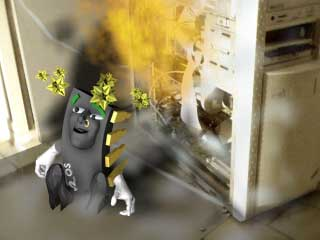
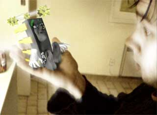
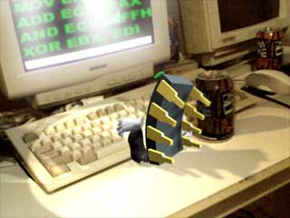

CHIPPIE
Last updated: Tuesday, March 07, 2000
...............................................................................................................
For some reason people keep emailing us
about chippie, about who modeled him, and in what 3D Software he was rendered etc etc. So
this page is to tell everybody that Chippie is a real living Chippie ! He is not rendered,
or modeled or whatever, he realy lives, walks and talks ! He is living at my place at the
moment and he helps me with proggramming...
But where did Chippie came from ? Well, one day I was programming a bit, and I was
toying around with some undocumented x86 instructions I had found on the net. I was trying
to make a small V2_OS .app with it, and it compiled fine, so I booted an old PC of mine
with the application, runned it, and BAF! a BIG loud BANG! The PC had exploded and had
caught fire ! The whole room was full of smoke and I couldn't see a thing ! So I opened up
the window to let the smoke get out, and when the room was a bit clearer again I saw
Chippie ! He had came rolling out of that PC ! I ofcourse took my photocamera and made
this picture:

There was a big flame, and it burned all my documents about the undocumented x86
instructions, so I can't see what instruction had caused all this !
The poor little fellow was all dizzy, stars were dansing around his head ! He
couldn't walk straight and kept falling over, so I picked him up:

He told me his name was Chippie, and that the last thing he remembered was that he saw this realy weird instruction passing by, and then there was a big bang, lots of smoke, and then he was all big like this... Ofcourse he was happy to be out of the computer and didn't wat to go back in, so now he lives here, in my house. He is trying to be a real good assembly programmer, and doing very well I think. When I'm out he's behind my work PC all day, surfing the internet and coding cool apps:

I know this sounds completely unbelievable, but it's true.. and these photo's are pretty good proof right ? Sometimes you can find him on ICQ or on IRC... in the #v2os channel ofcourse. Bye for now ! If I make more photo's of him I'll post them here too !
Joost_V2